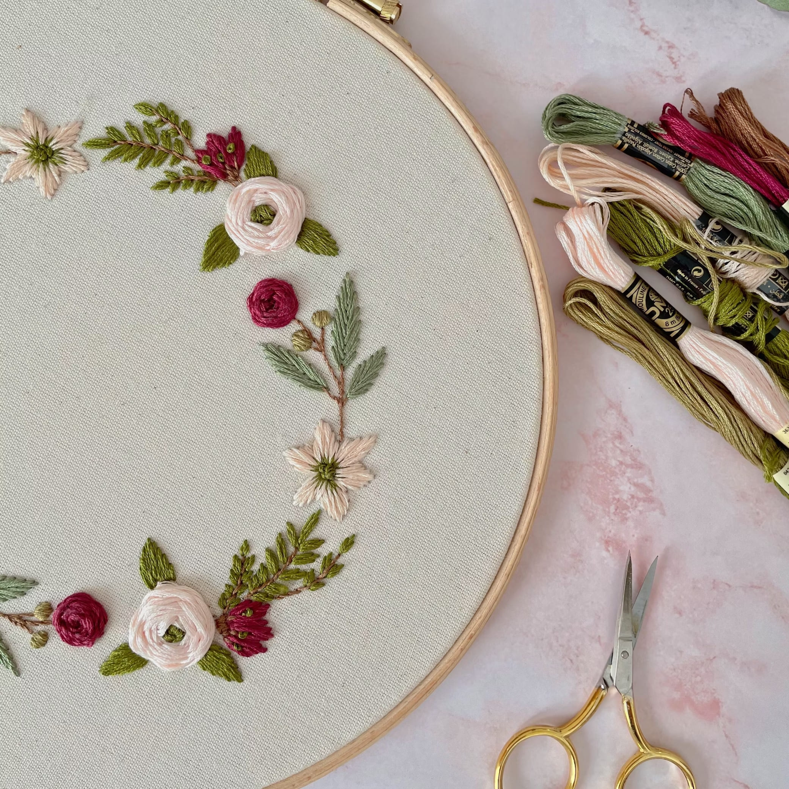

El bordado japonés Sashiko es una forma de arte textil que ha perdurado a lo largo de los siglos, arraigado en la rica historia y tradiciones de Japón.
Conocido por sus patrones geométricos y sus sutiles detalles, ha sido utilizado para reforzar telas y crear diseños decorativos en prendas de vestir.
Esta técnica, con su simplicidad elegante, refleja la habilidad artesanal y la estética minimalista de la cultura japonesa.
En Bordados Barber nos dedicamos a bordar todo tipo de prendas religiosas, somos expertos en este arte y en este artículo vamos a desgranar los
de este arte milenario.
Bordado Japonés Sashiko
Orígenes del bordado Sashiko
El bordado sashiko tiene sus raíces en las antiguas tradiciones de Japón, donde surgió como una técnica de costura funcional y decorativa.
Se cree que esta técnica se originó en las zonas rurales, donde las costureras realizaban pequeñas puntadas para reforzar las telas de kimono y
otras prendas de vestir.
Los patrones geométricos y repetitivos no solo proporcionaban fuerza adicional a las telas, sino que también tenían un propósito estético,
creando diseños simples pero elegantes. Con el tiempo se convirtió en un arte apreciado en todo Japón, transmitido de generación en generación
como parte importante de la cultura textil japonesa.
Este tipo de bordado tradicionalmente se realiza con un hilo de algodón llamado «sashiko-gami». Este hilo es más grueso que el hilo de bordar normal
y tiene una textura especial que facilita la creación de puntadas distintivas. Aunque son de varios colores, los tonos más comunes son el blanco y
el índigo, usados para crear los diseños más clásicos.
Este hilo de algodón, con su resistencia y suavidad, permite crear puntadas sólidas y duraderas que realzan la belleza de los diseños sashiko.
Su uso tradicional en esta técnica asegura que las puntadas destaquen y creen efectos visuales impresionantes en los textiles.
Tipos de bordados japonés Sashiko
El bordado japonés sashiko se ha desarrollado a lo largo del tiempo en una variedad de estilos y técnicas, cada uno con su propio encanto y significado. A continuación, te explicamos los más utilizados.
El Kasane es un tipo de sashiko bordado que se caracteriza por capas de puntadas superpuestas, creando un efecto tridimensional. Esta técnica se utiliza para reforzar zonas de tela que experimentan un desgaste frecuente, como las rodillas de los pantalones de trabajo. Las capas de puntadas no solo proporcionan resistencia adicional, sino que también añaden un interesante relieve y textura a la prenda.
El Kakinohanazashi es un patrón de bordado sashiko que se asemeja a las hojas de las ramas de otoño. Se caracteriza por sus líneas curvas y fluidas que imitan las formas naturales de las hojas. Esta técnica se utiliza comúnmente en la ornamentación de prendas de vestir y accesorios, aportando un toque de elegancia y delicadeza inspirada en la naturaleza.
El Shippo que significa «patrón de siete tesoros«, es un diseño de bordado sashiko que se basa en patrones geométricos repetitivos. Este patrón se compone de pequeños círculos entrelazados que forman un diseño simétrico y armonioso. El Shippo se utiliza para decorar una variedad de prendas y accesorios, brindando un toque de sofisticación y tradición japonesa.
El Yabane que se traduce como «pluma de flecha», es un patrón de bordado sashiko que representa las plumas de una flecha. Este diseño se caracteriza por sus líneas diagonales que se entrecruzan, creando un patrón en forma de punta de flecha. El Yabane se utiliza para decorar prendas de vestir y accesorios, aportando un toque de dinamismo y energía a la pieza.